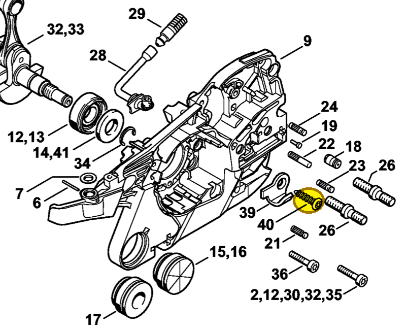

Pan head self-tapping screw
9074 477 4438
MS 261 — chain catcher
IS-P6×30. Secures chain catcher 1141 656 7700 (item 39) to the crankcase.
Item 40 Qty listed: 1

MS 261 C-M spare-parts list, 10/02/2023. Drawing p. 3; parts table p. 5.
Suggest a correctionGitHub · sign-in required